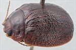
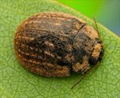
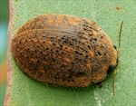
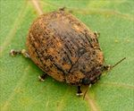
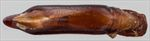
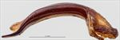
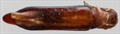
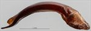
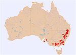

Click on images to enlarge
{kind=link}

{kind=link}

{kind=link}

Female, Pikedale, S.E. Queensland
{kind=link}

Female, Amiens, S.E. Queensland
{kind=link}

Aedeagus, dorsal view (Omeo, Victoria)
{kind=link}

Aedeagus, lateral view (Omeo, Victoria)
{kind=link}

Aedeagus, dorsal view (Armidale, N.E. New South Wales)
{kind=link}

Aedeagus, lateral view (Armidale, N.E. New South Wales)
{kind=link}

Distribution (pale-coloured circles indicate records obtained from iNaturalist)
Name
Trachymela victoriae (Blackburn)
Reference specimen
2004-080, Giraween N.P., SE Queensland.
Adult Description
Length: ♂ 6.9–8.8 mm (n=98), ♀ 7.3–9.4 mm (n=96).
Colouration:
- Head: Dark brown, often with poorly delimited darker-brown to black suffusions posterior to (or involving) the clypeus and frontoclypeal suture; mandibles entirely black or dark brown with black apices. Antennomeres 1–2 uniformly straw- to pale brown; antennomeres 3–11 darker, each segment grading from pale brown proximally to darker brown distally (rarely uniformly shaded).
- Pronotum: Dark brown, concolorous with or slightly darker than posterior vertex of head, with subtle and diffuse tonal variations; lateral margins usually slightly paler.
- Scutellum: Brown, concolorous with adjacent pronotal disc.
- Elytra: Dark brown, largely concolorous with darkest areas of pronotum, typically speckled with indistinct paler flecks; lateral marginal area frequently of this paler shade. Punctures concolorous with or slightly paler than interstices; humeral calli concolorous with surrounding disc.
- Venter & Legs: Venter dark brown to black; distal leg segments rarely slightly paler; inner surface of epipleura black.
- Cuticular Wax: Grey-brown to brown, sparse to moderate across the dorsal surface. More heavily concentrated on the head, along lateral pronotal margins, and across the elytra, where denser accumulations form either four longitudinal series of discrete clumps (aligned between verrucae of rows VR3, VR5, VR7, and VR9) or diffuse patches with the most concentrated within the anteromedian depression.
Morphology:
- Head: Punctures moderately coarse (puncture diameter ≈ 1.5–2× eye facet diameter), dense, and relatively evenly distributed. Antennae moderately long (AL/BL: ♂ 42–46%, ♀ 33–36%), filiform.
- Pronotum: Evenly convex transversely; foveal depression obsolete or absent, but bearing a distinct, elevated, pimple-like tubercle near its inner margin. Discal surface smooth to slightly uneven; puncturation distinctly impressed, similar in diameter to head punctures, dense (interspaces ≈ 1.5–2× pd), becoming markedly coarser laterally. Anterior angles rounded, sub-rectangular; lateral margins smoothly curved, widest at approximately two-thirds of the distance to the posterolateral angles.
- Scutellum: Surface rugose; impunctate or rarely with 1–2 minute punctures.
- Elytra: Dorsal surface evenly convex with a broad, shallow anteromedian depression. Punctures dense, evenly distributed, and surrounded by strongly convex interstices; intersecting thickened interstices form small, elevated verrucae (the larger of which bear a fine central puncture), creating an intricate granular texture that becomes noticeably more compact in the posterior third. Surface slightly discontinuous beneath the humeral callus; vertical epipleural extension moderate (HCE/PW = 0.33–0.42).
- Venter: Prosternal process subparallel-sided, weakly closed anteriorly, with sparse setae along its length and on the mesoventrite. Trochanters (especially posterior, but usually also anterior and median) bearing a distal cluster of > 1 long setae; anterior margin of metaventrite flat, bevelled; inner margin of epipleura lacking setae.
Male Genitalia (Aedeagus):
- Dimensions: Long (LPE/BL = 36–40%), slender (WPE/LPE ≈ 0.21).
- Dorsal view: Shaft subparallel-sided along most of its length with slight basal expansion; sides narrowing smoothly toward the apex into a prominent, extended spatulate process. Dorsal surface lightly sclerotised; dorsomedian channel faint and abbreviated; ostium relatively large, ovate.
- Lateral view: Shaft evenly and continuously curved along its entire length; extended apical spatula straight and distinctly deflexed.
Immature Stages
- Unknown.
Similar species
- Ta149: Morphologically very similar to Ta25. Ta149 specimens tend to be slightly smaller and paler, with a more slender aedeagus terminating in a sharply triangular rather than spatulate apex.
- Ta21: Broadly sympatric with Ta25 and frequently shares host trees. Live specimens are readily separated by the marginal wax pattern in Ta21. Structurally, Ta21 possesses only a single long seta on each trochanter (rather than a cluster of multiple setae as in Ta25).
- Ta23: Very similar to and sympatric with Ta25 on the New England Tablelands. Differs in possessing a paler venter and only a single long seta on each trochanter.
Notes
- Taxonomy: Confirmed as Trachymela victoriae (Blackburn) via direct comparison with the type specimen in the Natural History Museum, London (BMNH).
- Distribution & Abundance: Common and widespread from the New England Tablelands and Granite Belt (NE NSW / SE Qld) south through Victoria and west to southeastern South Australia and Kangaroo Island.
- Host Associations: Utilises a wide variety of eucalypts, predominantly within subgenus Symphyomyrtus section Adnataria (box group): Eucalyptus melliodora (n=46), E. odorata (n=10), E. moluccana (n=4), E. sideroxylon (n=3), and unidentified Adnataria (n=29). Also commonly recorded on section Exsertaria (red gums): E. camaldulensis (n=4), E. blakelyi (n=3), and other Exsertaria (n=41). Less frequent records include E. viminalis, E. prava, and the subalpine snow gum E. pauciflora (subgenus Eucalyptus section Cineraceae).
- Morphological Variation: Plots of LPE/BL against body length across 47 dissected males reveal a bimodal pattern: approximately 28% of individuals possess an aedeagus roughly 4% longer than typical specimens of identical size. This variation occurs throughout the geographic range and does not correlate with elevation, host species, or external morphological characters, though a possible link to cuticular wax distribution remains unverified.
Copyright © 2026. All rights reserved.